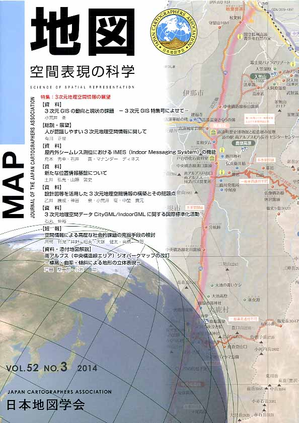

≪No.52 No.3 添付地図≫

本図を許可なく複製・利用することを禁止します。
| 最 新 号 | バックナンバー | 添付地図目録 | 投 稿 規 程 |
Vol.52 No.３ （通巻２０７号） ２０１４年 《特集：3次元地理空間情報の展望》
| 【資料】 | 3次元GISの動向と現状の課題 −3次元GIS特集号によせて− | 小荒井 衛 |
| キーワード：3次元GISデータ、屋内外シームレス測位、場所情報コード、CityGML、G空間EXPO | ||
| 【総説・展望】 | 人が認識しやすい3次元地理空間情報に関して | 有川正俊 |
| キーワード：3次元地理空間情報、地図弱者、エゴセントリック・マッピング、脳内地図、分かりやすい空間表現 | ||
| 【資料】 | 屋内外シームレス測位におけるIMES（Indoor Messaging System）の機能 | 鳥本秀幸・石井 真・マナンダー ディネス |
| キーワード：IMES（Indoor Messaging System)、屋内測位、屋内基準点 | ||
| 【資料】 | 新たな位置情報基盤について | 土井弘充・山際敦史 |
| キーワード：ucode、地理空間情報活用推進基本計画、位置情報、場所情報コード | ||
| 【資料】 | 設計図等を活用した3次元地理空間情報の構築とその問題点 | 乙井康成・神谷 泉・小荒井 衛・中埜貴元 |
| キーワード：設計図、屋内空間、3次元、地理空間情報 | ||
| 【資料】 | 3次元地理空間データCityGML / IndoorGMLに関する国際標準化活動 | 石丸伸裕 |
| キーワード：3D地理空間データ交換形式、Open Geospatial Consortium(OGC)、CityGML、IndoorGML | ||
| 【短報】 | 空間情報による高度な社会的課題の克服手段の検討 | 高幣玲児・井野昭夫・大塚健太・高橋 聡 |
| キーワード：災害対策、安全管理、新世代ネットワーク、インフラ維持管理、地理空間情報 | ||
| 【資料・添付地図解説】 | 南アルプス（中央構造線エリア）ジオパークマップの改訂 −標高・曲率・傾斜による地形の立体表現− | 戸田堅一郎・小池 温 |
| キーワード：ジオパーク、観光、曲率、傾斜、立体地形図 | ||
| 【学会記事】 | ||
| 【特別会員名簿】 | ||
| 【添付地図】 | 南アルプス（中央構造線エリア）ジオパーク | |
|
≪No.52 No.3 表紙≫ |
|
|  |
|
|
|
≪No.52 No.3 添付地図≫ |
|
本図を許可なく複製・利用することを禁止します。
|